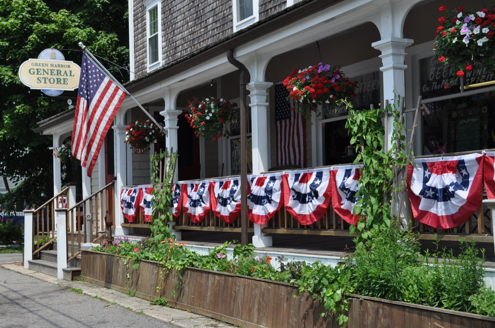

Green Harbor has a long wooden board walk that leads to a small but very beautiful beach. In the summer when you purchase a beach sticker it allows you to drive 20 minutes along the beach and brings you to Saquish, MA in the Cape. An interesting fact about Green Harbor is that the movie known as, "The Way Way Back" staring Steve Carell was filmed there. Green Harbor is also famous for the General Store. Also called, the Jenny. The Jenny sells subs, candy, ice cream, and apparel.
